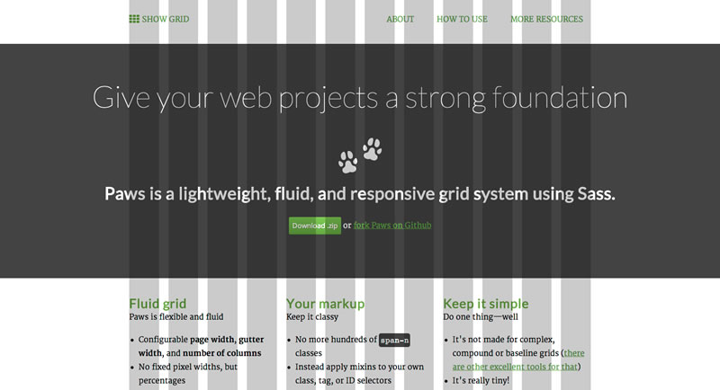

This small project was born due to a need I have with almost every web project: A very simple grid system.
I did not study graphic design, so I am not familiar with the complexity a grid system can have. I know some of the simple grid rules for books, I know about the golden ratio, but let’s be honest: for most of my web projects, I don’t care.
I simply want a plug-and-play grid that stays out of my way, but is flexible enough for multi-column layouts and responsive design.
Along comes Paws
Paws is a really simple grid for SASS. Here are all of the features:
- Define the number of columns
- Define a maximum width (either in % or px)
- Define the gutter width
- Mix the column span into your already existing class, ID or tag selectors
That’s all. You can also generate those awful classes span-1 to span-n you know from Bootstrap (shudder!) and use mixins to react to media queries (yay!).
No, this blog is not (yet) running on Paws, but I will apply it asap (that is, in a few months, I am lazy).
If you like, check it out on Github and leave a comment below!